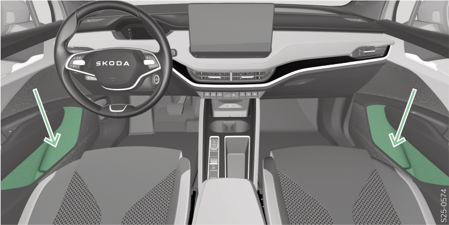

<!-- topicId: 36af54af1313e7de36679058e38c81b3_3_fr_FR | type: topic -->
<h1>Vue d’ensemble</h1>
<html data-dyxml-version="2"><div lang="fr-FR"><div class="topic-content"><section data-type="topic-allgemein" data-dl-contains="block" id="ID_483249c97b972b0cac1445252ae7ac38-92e5b3b5c67b90dcac144525015cf64a-fr-FR"><p id="ID_61d446ba7b972b0cac1445256d37f547-92e5b3b5c67b90dcac144525015cf64a-fr-FR"></p><div data-role="block" data-type="block" id="ID_f54fdd007b972b0cac1445252a8ff77a-92e5b3b5c67b90dcac144525015cf64a-fr-FR" hasIllu="true"><div data-type="illu" id="ID_8ca1169f35fd11ef9f6fefa87e99f0e6-92e5b3b5c67b90dcac144525015cf64a-fr-FR"><div data-class="vw-layout-narrow" data-dl-wrapper="figure" id="d2172131e34"><figure id="ID_26709f77b61b0c6dac144525164f8599-92e5b3b5c67b90dcac144525015cf64a-fr-FR" data-role="" data-type="" data-position=""><div><a data-fancybox="group" media-link="" class="fancybox" data-href="../media/imgadffcc23a0c55900ac1445252c88a560_1_--_--_PNG_3x.png" data-options="{&#34;buttons&#34;:[&#34;fullScreen&#34;, &#34;thumbs&#34;, &#34;close&#34;],&#34;hash&#34;:false}"></img></a></div></figure></div></div><p data-type="p" id="ID_92a117384e5811e9a3149cba1c7acd66-92e5b3b5c67b90dcac144525015cf64a-fr-FR">L’étagère est prévue pour ranger der bouteilles avec un contenu max. de 1,5 l.</p></div><div></div></section></div></div></html>